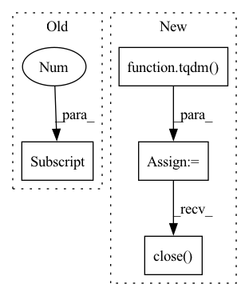

Pattern ID :9991
Before Change
// Use PIL to read high-resolution image
image = Image.open(f"{args.inputs_dir}/{file_name}")
for pos_x in range(0, image.size[0] - args.image_size + 1, args.step):
for pos_y in range(0, image.size[1] - args.image_size + 1, args.step):
// crop box xywh
crop_image = image.crop([pos_x, pos_y, pos_x + args.image_size, pos_y + args.image_size])After Change
image_file_names = os.listdir(args.images_dir)
// Splitting images with multiple threads
progress_bar = tqdm(total=len(image_file_names), unit="image", desc="Split")
workers_pool = Pool(args.num_workers)
for image_file_name in image_file_names:
workers_pool.apply_async(worker, args=(image_file_name, args), callback=lambda arg: progress_bar.update(1))
workers_pool.close()
workers_pool.join()
progress_bar.close()
def worker(image_file_name, args) -> None:
image = Image.open(f"{args.images_dir}/{image_file_name}").convert("RGB")In pattern: SUPERPATTERN
Frequency: 4
Non-data size: 4
Instances Fragment ID: 35643215
Project Name: lornatang/espcn-pytorch
Commit Name: 402254b48af87c5b1bae284cd2be1e90b69ba396
Time: 2022-02-08
Author: liuchangyu1111@gmail.com
File Name: scripts/prepare_dataset.py
M Class Name: AnonimousClass
N Class Name: AnonimousClass
M Method Name: main(1)
N Method Name: main(0)
M Parent Class:
N Parent Class:
M File Name: scripts/prepare_dataset.py
N File Name: scripts/prepare_dataset.py
M Start Line: 23
M End Line: 41
N Start Line: 23
N End Line: 38
Before Change
frames, frameRate, sliding_window_stride = get_frames_and_video_meta_data(video_path)
num_frames = frames.shape[0]
output_shape = (frames.shape[1] , frames.shape[2])
num_maps = int((num_frames - clip_size) / sliding_window_stride + 1)
if num_maps < 0:
// print(num_maps)
After Change
min_max_scaler = preprocessing.MinMaxScaler()
detector = get_haarcascade()
eye_detector = get_eye_haarcascade()
pbar = tqdm(total=num_frames, position=0, leave=True, desc=video_path+" Detecting Faces")
// First we process all the frames and then work with sliding window to save repeated processing for the same frame index
for idx, frame in enumerate(frames):
// spatio_temporal_map = np.zeros((fr, 25, 3))
"""
Preprocess the Image
Step 1: Use cv2 face detector based on Haar cascades
Step 2: Crop the frame based on the face co-ordinates (we need to do 160%)
Step 3: Downsample the face cropped frame to output_shape = 36x36
"""
faces = detector.detectMultiScale(frame, 1.3, 5)
if len(faces) is not 0:
(x, y, w, d) = faces[0]
frame_cropped = frame[y:(y + d), x:(x + w)]
// eyes = eye_detector.detectMultiScale(frame_cropped, 1.2, 3)
// if len(eyes) > 0:
// // for having the same radius in both eyes
// (eye_x, eye_y, eye_w, eye_h) = eyes[0]
// eye_radius = (eye_w + eye_h) // 5
// mask = np.ones(frame_cropped.shape[:2], dtype="uint8")
// for (ex, ey, ew, eh) in eyes[:2]:
// eye_center = (ex + ew // 2, ey + eh // 2)
// // if eye_radius
// cv2.circle(mask, eye_center, eye_radius, 0, -1)
// // eh = int(0.8*eh)
// // ew = int(0.8*ew)
// // cv2.rectangle(mask, (ex, ey), (ex+ew, ey+eh), 0, -1)
//
// frame_masked = cv2.bitwise_and(frame_cropped, frame_cropped, mask=mask)
// else:
// frame_masked = frame_cropped
// // plot_image(frame_masked)
frame_masked = frame_cropped
else:
// The problemis that this doesn"t get cropped :/
// (x, y, w, d) = (308, 189, 215, 215)
// frame_masked = frame[y:(y + d), x:(x + w)]
// print("face detection failed, image frame will be masked")
mask = np.zeros(frame.shape[:2], dtype="uint8")
frame_masked = cv2.bitwise_and(frame, frame, mask=mask)
// plot_image(frame_masked)
// frame_cropped = frame[y:(y + d), x:(x + w)]
try:
// frame_resized = cv2.resize(frame_masked, output_shape, interpolation=cv2.INTER_CUBIC)
frame_resized = cv2.cvtColor(frame_masked, cv2.COLOR_BGR2YUV)
except:
print("\n--------- ERROR! -----------\nUsual cv empty error")
print(f"Shape of img1: {frame.shape}")
// print(f"bbox: {bbox}")
print(f"This is at idx: {idx}")
return False, None
// exit(666)
processed_frames.append(frame_resized)
pbar.update(1)
pbar.close()
// roi_blocks = chunkify(frame_resized)
// for block_idx, block in enumerate(roi_blocks):
// avg_pixels = cv2.mean(block)
// processed_maps[idx, block_idx, 0] = avg_pixels[0]
// processed_maps[idx, block_idx, 1] = avg_pixels[1]
// processed_maps[idx, block_idx, 2] = avg_pixels[2]
pbar = tqdm(total=num_maps, position=0, leave=True, desc=video_path+" Making STMAPS")
// At this point we have the processed maps from all the frames in a video and now we do the sliding window part.
for start_frame_index in range(0, num_frames, sliding_window_stride):
end_frame_index = start_frame_index + clip_size
if end_frame_index > num_frames:
break
// // print(f"start_idx: {start_frame_index} | end_idx: {end_frame_index}")
spatio_temporal_map = np.zeros((clip_size, 25, 3))
//
// spatio_temporal_map = processed_maps[start_frame_index:end_frame_index, :, :]
for idx, frame in enumerate(processed_frames[start_frame_index:end_frame_index]):
roi_blocks = chunkify(frame)
for block_idx, block in enumerate(roi_blocks):
avg_pixels = cv2.mean(block)
spatio_temporal_map[idx, block_idx, 0] = avg_pixels[0]
spatio_temporal_map[idx, block_idx, 1] = avg_pixels[1]
spatio_temporal_map[idx, block_idx, 2] = avg_pixels[2]
for block_idx in range(spatio_temporal_map.shape[1]):
// Not sure about uint8
fn_scale_0_255 = lambda x: (x * 255.0).astype(np.uint8)
scaled_channel_0 = min_max_scaler.fit_transform(spatio_temporal_map[:, block_idx, 0].reshape(-1, 1))
spatio_temporal_map[:, block_idx, 0] = fn_scale_0_255(scaled_channel_0.flatten())
scaled_channel_1 = min_max_scaler.fit_transform(spatio_temporal_map[:, block_idx, 1].reshape(-1, 1))
spatio_temporal_map[:, block_idx, 1] = fn_scale_0_255(scaled_channel_1.flatten())
scaled_channel_2 = min_max_scaler.fit_transform(spatio_temporal_map[:, block_idx, 2].reshape(-1, 1))
spatio_temporal_map[:, block_idx, 2] = fn_scale_0_255(scaled_channel_2.flatten())
stacked_maps[map_index, :, :, :] = spatio_temporal_map
map_index += 1
pbar.update(1)
pbar.close()
(idx, w, h, c) = stacked_maps.shape
stacked_maps = stacked_maps.reshape((idx, h, w, c))
Fragment ID: 35643214
Project Name: tvs-ai/pytorch_rppgs
Commit Name: fb7669c43864d13d11528ad55745d21e2ce0635e
Time: 2022-10-19
Author: 57242033+najy97@users.noreply.github.com
File Name: utils/image_preprocess.py
M Class Name: AnonimousClass
N Class Name: AnonimousClass
M Method Name: RhythmNet_preprocessor(2)
N Method Name: RhythmNet_preprocessor(2)
M Parent Class:
N Parent Class:
M File Name: utils/image_preprocess.py
N File Name: utils/image_preprocess.py
M Start Line: 984
M End Line: 1102
N Start Line: 1004
N End Line: 1109
Before Change
def download_from_url(urladdr,ppath):
file_name=urladdr.split("/")[-1]
if os.path.isdir(ppath)==False:
os.makedirs(ppath)
r = requests.get(urladdr, stream=True)
f = open("file_path.zip", "wb")After Change
response = requests.get(urladdr, stream=True)
total_size_in_bytes= int(response.headers.get("content-length", 0))
block_size = 2048 /Ǘ Kibibyte
progress_bar = tqdm(total=total_size_in_bytes, unit="iB", unit_scale=True)
with open(file_name, "wb") as file:
for data in response.iter_content(block_size):
progress_bar.update(len(data))
file.write(data)
zipfile = ZipFile(file_name)
zipfile.extractall(path=ppath)
progress_bar.close()
os.remove(file_name)
//http_response = urlopen(urladdr)
//total_length = int(http_response.headers.get("content-length"))
//print("here1",total_length) Fragment ID: 35643212
Project Name: microsoft/nn-meter
Commit Name: 9446d4189bace0f8c5bb5a8044bcf4b65e979884
Time: 2021-06-02
Author: lzhani@microsoft.com
File Name: prediction/load_predictors.py
M Class Name: AnonimousClass
N Class Name: AnonimousClass
M Method Name: download_from_url(3)
N Method Name: download_from_url(2)
M Parent Class:
N Parent Class:
M File Name: prediction/load_predictors.py
N File Name: prediction/load_predictors.py
M Start Line: 32
M End Line: 43
N Start Line: 35
N End Line: 58
Before Change
image = Image.open(f"{args.inputs_dir}/{file_name}")
for pos_x in range(0, image.size[0] - args.image_size + 1, args.step):
for pos_y in range(0, image.size[1] - args.image_size + 1, args.step):
// crop box xywh
crop_image = image.crop([pos_x, pos_y, pos_x + args.image_size, pos_y + args.image_size])
// Save all imagesAfter Change
image_file_names = os.listdir(args.images_dir)
// Splitting images with multiple threads
progress_bar = tqdm(total=len(image_file_names), unit="image", desc="Split")
workers_pool = Pool(args.num_workers)
for image_file_name in image_file_names:
workers_pool.apply_async(worker, args=(image_file_name, args), callback=lambda arg: progress_bar.update(1))
workers_pool.close()
workers_pool.join()
progress_bar.close()
def worker(image_file_name, args) -> None:
image = Image.open(f"{args.images_dir}/{image_file_name}").convert("RGB") Fragment ID: 35643220
Project Name: lornatang/srcnn-pytorch
Commit Name: 12911c60469281dbb13842a780d18c46ef4a0405
Time: 2022-01-12
Author: liuchangyu1111@gmail.com
File Name: scripts/prepare_dataset.py
M Class Name: AnonimousClass
N Class Name: AnonimousClass
M Method Name: main(1)
N Method Name: main(0)
M Parent Class:
N Parent Class:
M File Name: scripts/prepare_dataset.py
N File Name: scripts/prepare_dataset.py
M Start Line: 23
M End Line: 41
N Start Line: 23
N End Line: 38